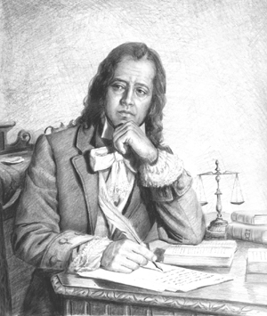

3
publicações
2000
seguidores
1900
seguindo
Tomás Antônio Gonzaga
Arcadismo · 1744 – 1810
✍️ Gonzaga foi um dos principais poetas do Arcadismo no Brasil colonial. Viveu no contexto do ciclo do ouro em Minas Gerais e participou do movimento de Inconfidência Mineira, que buscava a independência do domínio português.
📍 Porto / Portugal(na época, Reino de Portugal)
🔗 Obra principal ou obra mais conhecida
📍 Porto / Portugal(na época, Reino de Portugal)
Stories


Destaques

🤍 Seja o primeiro a curtir
@tomas_antonio
Tomás Antônio Gonzaga(1744-1810) foi um poeta e jurista do período colonial brasileiro. Nasceuna cidade de Porto em Portugal, mas viveu grande parte de sua vida no Brasil. Sua obra ajudou a consolidar a literatura produzida no Brasil.
Ver todos os comentários
@prof_literatura
Ótimo post! Que obra incrível! 📚
Há 30 minutos

🤍 Seja o primeiro a curtir
@tomas_antonio
"Marília de Dirceu": a obra reúne poemas amorosos escritos para Marília, personagem inspirado em Maria Doroteia, mulher amada pelo autor.
Ver todos os comentários
@leitor_apaixonado
Adorei esse autor! Muito representativo do período. 🌟
Há 1 hora

🤍 Seja o primeiro a curtir
@usuario_do_escritor
Influência na literatura brasileira Tomás Antônio Gonzaga foi um dos principais poetas do período colonial e ajudou a desenvolver a literatura brasileira com suas obras sobre amor, natureza e sentimentos humanos. Seu legado: deixou importantes obras, especialmente Marília den Dirceu, além de contribuir para a valorização da poesia brasileira e para a preservação da história da época colonial.
Ver todos os comentários
@turma_literatura
Que trabalho incrível! Parabéns! 🎉
Há 1 semana